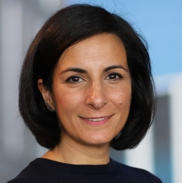
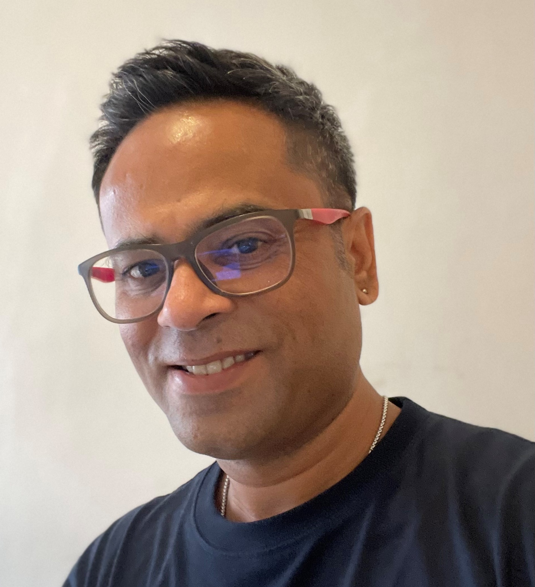

Efthimia Aivaloglou
Fenia Aivaloglou (PhD, University of the Aegean) is an Assistant Professor at the Center for Education and Learning at Delft University of Technology. Her research is in computing education, interested in include teaching approaches, informal and lifelong education, and gender diversity. Furthermore, she is currently focusing on data education and collaborative learning.
Abdussalam Alawini
 Abdussalam Alawini (PhD, Portland State University) is a Teaching Associate Professor in the School of Computing and Data Science at the University of Illinois Urbana-Champaign. His research interests lie broadly in database systems and computing education, with a focus on applying AI technologies to enhance active learning and improve online assessments. His work has been published in several top-tier conferences in data systems (SIGMOD, ICDE) and computing education (SIGMOD, ITiCSe, EDM). Dr. Alawini is highly dedicated to teaching, and his excellence in this area has been recognized with the 2024 Campus Excellence in Undergraduate Teaching Award.
Abdussalam Alawini (PhD, Portland State University) is a Teaching Associate Professor in the School of Computing and Data Science at the University of Illinois Urbana-Champaign. His research interests lie broadly in database systems and computing education, with a focus on applying AI technologies to enhance active learning and improve online assessments. His work has been published in several top-tier conferences in data systems (SIGMOD, ICDE) and computing education (SIGMOD, ITiCSe, EDM). Dr. Alawini is highly dedicated to teaching, and his excellence in this area has been recognized with the 2024 Campus Excellence in Undergraduate Teaching Award.
Sourav Bhowmick
Sourav Bhowmick (PhD, Nanyang Technological University) is an Associate Professor in the School of Computer Science and Engineering (SCSE), Nanyang Technological University, Singapore. His core research expertise is in data management, human-data interaction, and data analytics. His research has appeared in premium venues such as ACM SIGMOD, VLDB, and VLDB Journal. He has been Program Co-chair for several venues such as EDBT 2023, CIKM 2020, and DASFAA 2014.
George Fletcher
 George Fletcher (PhD, Indiana University Bloomington) is a Professor of Computer and Data Science at Eindhoven University of Technology, where he chairs the Database Group of the Data and Artificial Intelligence Cluster. His research interests span social aspects of data systems, query language design and engineering, foundations of databases, and data integration. His current research focus is on data education and graph data management.
George Fletcher (PhD, Indiana University Bloomington) is a Professor of Computer and Data Science at Eindhoven University of Technology, where he chairs the Database Group of the Data and Artificial Intelligence Cluster. His research interests span social aspects of data systems, query language design and engineering, foundations of databases, and data integration. His current research focus is on data education and graph data management.
Michael Liut
 Michael Liut (PhD, McMaster University) is an Assistant Professor in the teaching stream at the University of Toronto Mississauga, where he's positioned at the intersection of computer science and education. With a primary research emphasis on applied AI/ML in education, Michael delves into the intricate realms of educational technologies, data systems, algorithmic design, and student behaviour. His passion lies in harnessing these insights to craft adaptive experimentation and innovative behavioural interventions. At the heart of his work, Michael strives to refine and enhance the educational journey.
Michael Liut (PhD, McMaster University) is an Assistant Professor in the teaching stream at the University of Toronto Mississauga, where he's positioned at the intersection of computer science and education. With a primary research emphasis on applied AI/ML in education, Michael delves into the intricate realms of educational technologies, data systems, algorithmic design, and student behaviour. His passion lies in harnessing these insights to craft adaptive experimentation and innovative behavioural interventions. At the heart of his work, Michael strives to refine and enhance the educational journey.
Daphne Miedema
 Daphne Miedema (PhD, Eindhoven University of Technology) is an Assistant Professor is an Assistant Professor in the Intelligent Data Engineering Lab at the University of Amsterdam. She has a background in both Computer Science and Engineering as well as Human-Computer Interaction. Her research interest is in the interaction of humans with data, including the educational angle.
Daphne Miedema (PhD, Eindhoven University of Technology) is an Assistant Professor is an Assistant Professor in the Intelligent Data Engineering Lab at the University of Amsterdam. She has a background in both Computer Science and Engineering as well as Human-Computer Interaction. Her research interest is in the interaction of humans with data, including the educational angle.